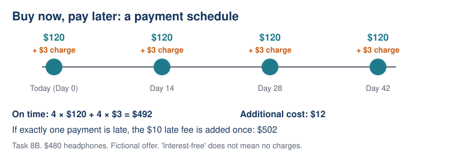

Lesson 8: Buy Now, Pay Later: What Does It Really Cost?
Year level: Year 10 — Stage 5Duration: 60 minutesFocal concept/topic: Buy Now, Pay Later: What Does It Really Cost? | |
Lesson aim: Investigate stated BNPL terms and explain how charges change total purchase cost. | |
Learning intention: We are learning to calculate BNPL purchase costs under clearly stated payment conditions. Success criteria: □ I can identify payment amounts, dates and separately stated charges. | |
Syllabus outcomes and content:
Relevant content (paraphrased): Investigate BNPL payment options and associated costs for buying goods. | Working Mathematically indicators:
|
ICT: Pairs build and audit spreadsheet formulas, then vary an explicitly stated charge to investigate changing totals. One student enters; the other checks against handwritten arithmetic; swap roles. | LIT:
|
Prerequisite knowledge:
| Resources:
|
Labels used in this plan: WM Working Mathematically LIT Literacy ICT Technology AfL Assessment for learning AoL Assessment of learning
Key teacher question → Expected: suggested student response. Self-designed WM indicators are in italics.
Teaching sequence
| Steps & timing | Teaching & learning activities |
|---|---|
| ORIENTATION0–8 minRetrieval and bridge | Teacher: Review a common Lesson 7 error without naming students. Use Task 8A. Students: Calculate independently and explain why the first payment is not added twice. AfL If duplicated, highlight that four payments includes the payment today; introduce LI/SC. |
| ENHANCING8–18 minWorked schedule | Teacher: Model Task 8B using Day 0, 14, 28, 42. Read all conditions before computing. Students: Annotate on-time and late scenarios separately. LIT WM Ask “Does no interest mean no charges?” Expected: not necessarily; inspect the stated terms. |
| ENHANCING18–23 minHinge and response | Use Task 8C independently. AfL At least 80% correct with sound working: proceed. Otherwise model the omitted account charge or duplicated principal, then ask the fresh check in 8C. |
| ENHANCING23–40 minICT investigation | Teacher: Give Task 8D. Demonstrate input headings, not completed answers. Students: Hand-calculate first; build formulas in pairs; swap roles; test one altered late-fee input. ICT WM AfL Compare formula output with arithmetic; ask what changes and what remains fixed. Paper fallback uses identical input columns. |
| ENHANCING40–50 minCritical comparison | Students: Answer Task 8E individually, then discuss in pairs. LIT WM Distinguish lower cost, schedule fit and unknown affordability. Teacher: Ask for calculations and remaining unknowns, not a universal product recommendation. |
| SYNTHESIZING50–55 minExplain and revise | Students: Correct “Offer B is interest-free so its total is always the cash price.” Expected: on time it costs $654 because of account charges; the specified late case costs $669. AfL Listen for conditional language. |
| SYNTHESIZING55–60 minIndependent exit | Students: Complete Task 8F; no partner or spreadsheet help, calculator allowed. AfL Sort errors into payment count, omitted charge and interpretation; use them for Lesson 9 retrieval. Contingency: Reduce sharing, preserve exit. |
Tasks and worked answers — printable resource
8A: A $400 item is paid in four equal payments, including one today, with no charges. Each = $100; total = 4 × $100 = $400, not $500.
8B: $480 headphones. Four payments of $120 on Days 0, 14, 28 and 42. A separate $3 account charge is paid at each scheduled payment date. If exactly one payment is late, an additional $10 charge applies once. On time: 4 × 120 + 4 × 3 = $492; additional cost $12. Specified late case: $492 + $10 = $502; additional cost $22. The $10 does not replace the late $120 payment.
8C Hinge: $300 item; three payments of $100, including today; $2 charge at each date; no late fee in this scenario. A $300, B $302, C $306, D $406. Correct C = 3 × 100 + 3 × 2. Fresh check: $200 item, four $50 payments with $1 charge each → $204.
8D: $640 tablet. Cash $640. Offer A: four $160 payments including today, no account charge, $8 per late payment. Offer B: eight $80 payments including today, $14 account charge in total, $15 per late payment. Calculate on-time total and total with exactly one late payment.
| Option | On time | One late payment | Additional cost: on time / late |
|---|---|---|---|
| Cash | $640 | Not applicable | $0 / not applicable |
| A | $640 | $648 | $0 / $8 |
| B | $654 | $669 | $14 / $29 |
Spreadsheet columns A–G: Option / Payment amount / Payment count / Total account charges / Fee per late payment / Late-payment count / Total paid. A row 2: A,160,4,0,8,0. B row 3: B,80,8,14,15,0. G2 = B2*C2+D2+E2*F2; copy to G3. Set F2 and F3 to 1 for the one-late scenario. Investigation: increase A’s fee input to $12 while F2 = 1 → $652; changing that fee has no effect when F2 = 0. These formulas count account charges as totals, not per-payment charges.
8E: Both offers require the first scheduled payment today; remaining A payments are fortnightly, remaining B payments weekly. Fictional buyer can pay no more than $100 today and $90 at each later date; B’s $14 account charge is payable separately with its first payment. Which fits these limits? B: $94 today and $80 later. A fails: $160 today and later. Cash fails today: $640. A is cheaper on time by $14. These ceilings alone do not establish affordability or credit eligibility. Ask what income timing and other commitments are missing.
8F Exit: $360 item; six payments of $60, including today; separate $2 charge at each date; one additional $9 fee for exactly one late payment. On time = $360 + $12 = $372. Specified late case = $381. Explain “interest-free means no additional cost”: false in this offer; charges add $12 or $21.
Vocabulary
| Term | Student-friendly definition |
|---|---|
| BNPL | A payment arrangement that divides a purchase into scheduled payments. |
| Interest-free | No interest is charged under the stated conditions; other charges may still apply. |
| Account charge | A separately stated charge for the payment arrangement. |
| Late fee | An additional charge when a specified payment is late. |
| Payment schedule | The dates and amounts of required payments. |
| Conditional total | Total for a stated scenario, such as exactly one late payment. |

Adjustments and anticipated misconceptions
| Barrier / misconception | Specific support and retained demand |
|---|---|
| Adds payment today twice | Mark today as payment 1 of the stated total number. |
| Omits charges / repeats total charge | Underline whether a charge is per payment or a total; place it in the appropriate column. |
| Spreadsheet difficulty | Give headings and cell locations; retain student-built formula and handwritten check. |
| EAL/D / reluctant speaker | Annotate short terms and use “Under the __ scenario, total cost is __ because …”. |
| Extension | For B on-time to equal A with one late payment, A’s late fee must be $14; justify 640+f=654. |
Curriculum source and planning acknowledgement
NSW Education Standards Authority. (2022). Mathematics K–10 syllabus: Stage 5, Financial mathematics A. https://curriculum.nsw.edu.au/learning-areas/mathematics/mathematics-k-10-2022/content/stage-5/facb3aa952 (checked 6 October 2026). Content links are paraphrased; italicised Working Mathematically indicators are teacher-designed, not separate official outcome codes.
All offer terms are fictional classroom data, not current financial-product or legal information. Each lesson totals 60 minutes. Support should respond to observed student work, and all learners retain the core calculation and reasoning goals.